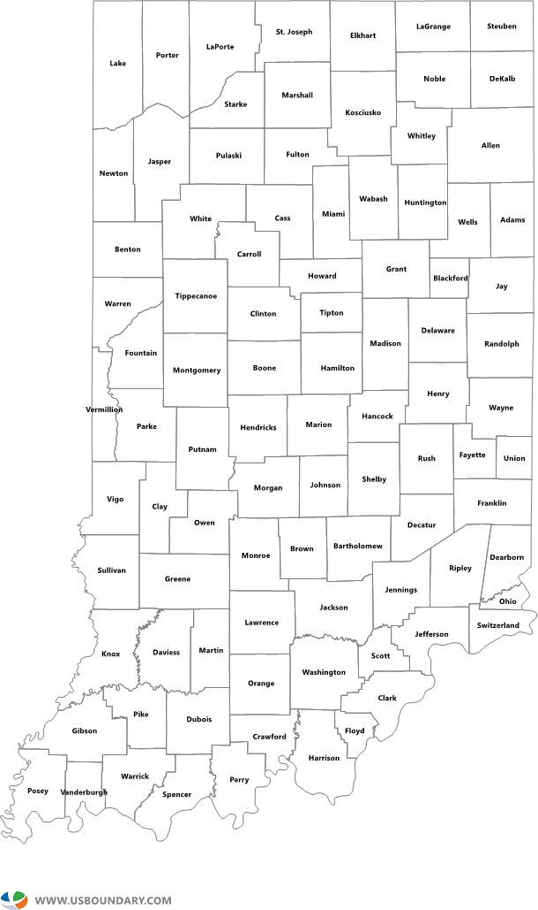

<!DOCTYPE html>
<meta charset="utf-8">
<style>

.counties {
  fill: none;
  stroke: #aaa;
}

.states {
  fill: none;
  stroke: #000;
  stroke-linejoin: round;
}

</style>
<div id="map">
<svg id="svg" width="960" height="600"></svg>
</div>
<br/><br/>
<div id="updatableChart"></div>
<br/><br/>
<svg id="svg2" width="960" height="600"></svg>
<script src="https://d3js.org/d3.v4.min.js"></script>
<script src="https://d3js.org/d3-scale-chromatic.v1.min.js"></script>
<script src="https://d3js.org/topojson.v2.min.js"></script>
<script src="barChart.js"></script>
<style>
	div {
		padding: 20px 0 0 10px;
	}
</style>
<script>

var svg = d3.select("#svg"),
    width = +svg.attr("width"),
    height = +svg.attr("height");

var demographic = d3.map();

var path = d3.geoPath();

var x = d3.scaleLinear()
    .domain([1, 10])
    .rangeRound([600, 860]);

var color = d3.scaleThreshold()
    .domain(d3.range(1, 10))
    .range(d3.schemeRdBu[9].reverse());

var g = svg.append("g")
    .attr("class", "key")
    .attr("transform", "translate(0,40)");

g.selectAll("rect")
  .data(color.range().map(function(d) {
      d = color.invertExtent(d);
      if (d[0] == null) d[0] = x.domain()[0];
      if (d[1] == null) d[1] = x.domain()[1];
      return d;
    }))
  .enter().append("rect")
    .attr("height", 8)
    .attr("x", function(d) { return x(d[0]); })
    .attr("width", function(d) { return x(d[1]) - x(d[0]); })
    .attr("fill", function(d) { return color(d[0]); });

g.append("text")
    .attr("class", "caption")
    .attr("x", x.range()[0])
    .attr("y", -6)
    .attr("fill", "#000")
    .attr("text-anchor", "start")
    .attr("font-weight", "bold")
    .text("Urban/Rural Counties");

g.call(d3.axisBottom(x)
    .tickSize(13)
    .tickFormat(function(x, i) { return i ? x : x; })
    .tickValues(color.domain()))
  .select(".domain")
    .remove();

d3.queue()
    .defer(d3.json, "https://d3js.org/us-10m.v1.json")
    .defer(d3.csv, "test_data.csv", function(d) { demographic.set(d.id, +d.value); })
    .await(ready);

function ready(error, us) {
  if (error) throw error;

  svg.append("g")
      .attr("class", "counties")
    .selectAll("path")
    .data(topojson.feature(us, us.objects.counties).features)
    .enter().append("path")
      .attr("fill", function(d) { return color(d.value = demographic.get(d.id)); })
      .attr("d", path)
	  .on("click", function(d) { document.getElementById("svg").style.visibility = "hidden";
								 var map = document.getElementById("map");
								 map.innerHTML = "<br/></img>"; })
    .append("title")
      .text(function(d) { return d.value; });

  svg.append("path")
      .datum(topojson.mesh(us, us.objects.states, function(a, b) { return a !== b; }))
      .attr("class", "states")
      .attr("d", path)
	  .on("click", function() { alert("Test."); });
}


//BARS
//var dataSet = [];
var inputData = [37, 12, 17, 22, 12];
//var lowTemperatures = dataSet[1] = highTemperatures.map(function(d) { return d - Math.random() * 30});
//var milesRun = dataSet[2] = [2, 5, 4, 3, 1, 2, 1];
//var fillColors = ['coral', 'steelblue', 'teal'];

var updatableChart = barChart().width(800).height(450).data(inputData); //change width and height here

d3.select('#updatableChart')
	.call(updatableChart);


//var i = 1;
//window.setInterval(function() {
//    updatableChart.data(dataSet[i]); //cycle through the data
//    updatableChart.fillColor('coral');
//    i = (i+1) % 3 ;
//}, 2500);


//SCATTERPLOT
var margin = {
		top: 20,
		right: 20,
		bottom: 30,
		left: 40
	},
	width = 960 - margin.left - margin.right,
	height = 500 - margin.top - margin.bottom;

var x = d3.scaleLinear()
	.range([0, width]);

var y = d3.scaleLinear()
	.range([height, 0]);

var xAxis = d3.axisBottom()
	.scale(x)
	.ticks(0);

var yAxis = d3.axisLeft()
	.scale(y)
	.ticks(0);


var svg2 = d3.select("#svg2")
	.attr("width", width + margin.left + margin.right)
	.attr("height", height + margin.top + margin.bottom)
	.append("g")
	.attr("transform", "translate(" + margin.left + "," + margin.top + ")");


svg2.append("text")
	.attr("x", (width / 2))             
	.attr("y", 0 - (margin.top / 1000))
	.attr("text-anchor", "middle")  
	.style("font", "26px sans-serif")  
	.text("NAME THIS GRAPH HERE");

var data = create_data(1000);

data.forEach(function(d) {
	d.x = +d.x;
	d.y = +d.y;
	d.yhat = +d.yhat;
});

var line = d3.line()
	.x(function(d) {
		return x(d.x);
	})
	.y(function(d) {
		return y(d.yhat);
	});

x.domain(d3.extent(data, function(d) {
	return d.x;
}));
y.domain(d3.extent(data, function(d) {
	return d.y;
}));

svg2.append("g")
	.attr("class", "x axis")
	.attr("transform", "translate(0," + height + ")")
	.call(xAxis)
	.append("text")
	.attr("class", "label")
	.attr("x", width)
	.attr("y", -6)
	.style("text-anchor", "end")
	.style("font", "24px sans-serif")
	.text("Crime Rate");

svg2.append("g")
	.attr("class", "y axis")
	.call(yAxis)
	.append("text")
	.attr("class", "label")
	.attr("transform", "rotate(-90)")
	.attr("y", 6)
	.attr("dy", ".71em")
	.style("text-anchor", "end")
	.style("font", "24px sans-serif")
	.text("Population")

svg2.selectAll(".dot")
	.data(data)
	.enter().append("circle")
	.attr("class", "dot")
	.attr("r", 3.5)
	.attr("cx", function(d) {
		return x(d.x);
	})
	.attr("cy", function(d) {
		return y(d.y);
	});

//svg2.append("path")
//    .datum(data)
//    .attr("class", "line")
//    .attr("d", line);


function create_data(nsamples) {
	var x = [];
	var y = [];
	var n = nsamples;
	var x_mean = 0;
	var y_mean = 0;
	var term1 = 0;
	var term2 = 0;
	var noise_factor = 100;
	var noise = 0;
	// create x and y values
	for (var i = 0; i < n; i++) {
		noise = noise_factor * Math.random();
		noise *= Math.round(Math.random()) == 1 ? 1 : -1;
		y.push(i / 5 + noise);
		x.push(i + 1);
		x_mean += x[i]
		y_mean += y[i]
	}
	// calculate mean x and y
	x_mean /= n;
	y_mean /= n;

	// calculate coefficients
	var xr = 0;
	var yr = 0;
	for (i = 0; i < x.length; i++) {
		xr = x[i] - x_mean;
		yr = y[i] - y_mean;
		term1 += xr * yr;
		term2 += xr * xr;

	}
	var b1 = term1 / term2;
	var b0 = y_mean - (b1 * x_mean);
	// perform regression 

	yhat = [];
	// fit line using coeffs
	for (i = 0; i < x.length; i++) {
		yhat.push(b0 + (x[i] * b1));
	}

	var data = [];
	for (i = 0; i < y.length; i++) {
		data.push({
			"yhat": yhat[i],
			"y": y[i],
			"x": x[i]
		})
	}
	return (data);
}

</script>
